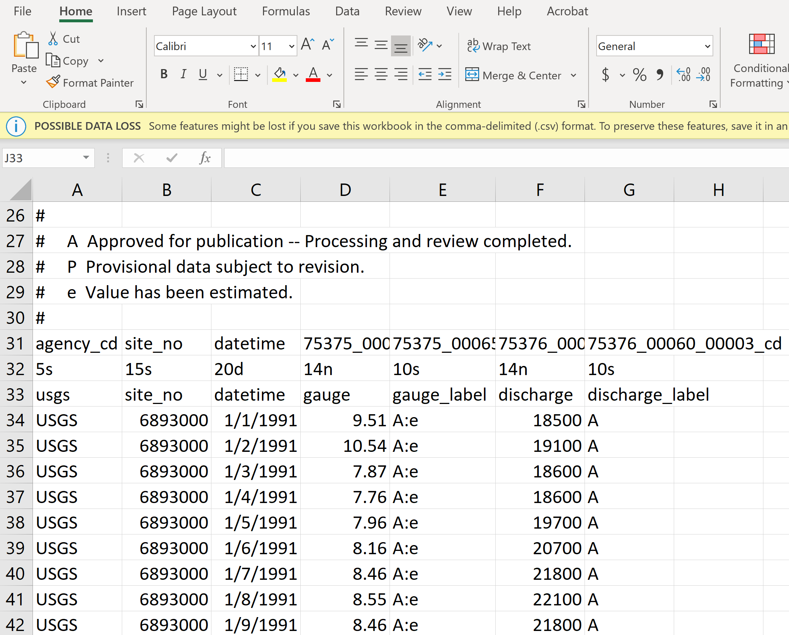

Spectral analysis of river discharge data
Contents
Spectral analysis of river discharge data#
Introduction#
In this lab, we will do some simple data analysis of river discharge using spectral analysis. We will need a special package within the Scipy library so that we don’t need to write our own algorithm to do data analysis.
An example#
Let’s start with a simple example to understand how spectral analysis works. If we have a series of data that follows a sines wave as a function of time:
where amplitude \(A\) = 0.2, angular frequency \(\omega = 2 \pi f\) with \(f = 0.5\) Hz being the frequency, and phase \(\phi=0\). If we have a sensor to measure the signal at sample rate of 100 Hz for 10 seconds. We can express every time snapshot in a numpy array (\(t\)), and calculate the data (\(u\)) from Eq. (15):
import numpy as np
import matplotlib.pyplot as plt
A = 0.2
f = 0.5
phi = 0
sample_rate = 100.
t = np.arange(0,10+1/sample_rate,1/sample_rate)
u = A * np.sin(2*np.pi*f*t+phi)
# plt.style.use("fivethirtyeight") # define the style of the plot
plt.plot(t,u,'o')
plt.xlabel(r'$t$ (s)', fontsize=20)
plt.ylabel(r'$u$ (m/s)', fontsize=20)
plt.show()
Now you can do spectral analysis to this dataset following the simple step:
from scipy.signal import periodogram
f, psd = periodogram(u, sample_rate)
plt.figure(2)
plt.plot(f,psd)
plt.xlabel('Frequency (Hz)', fontsize=20)
plt.ylabel('PSD ((m/s)$^2$/Hz)', fontsize=20)
plt.ylim((1e-10,1))
plt.yscale('log')
The above plot is called periodogram, which is essentially the spectral density (or power) of the signal:
Box question 1
In your own plot, observe two variables: (1) the frequency of the peak spectral density (power), and (2) the maximal frequency on the \(x\)-axis, i.e., the maximal resolved frequency in the data. Change the sample rate in your code, do you observe changes in the above two variables in your plot?
Now, let’s add some random noise to the signal and keep the noise level quite small (10% of its actual amplitude):
u_noise = np.random.randn(len(u)) * 0.1 * A
u = u + u_noise
Box question 2
Plot the new data set (u vs. t), and repeat spectral analysis. What difference do you observe in your periodogram plot?
Box question 3
Let’s superimpose a secondary signal \(u_2 = 0.5 A \sin(2\pi f t)\) with frequency of \(f=5\) Hz to the data after adding noise, so that the new data \(u_n = u + u_2\), plot \(u_n\) vs. \(t\) and perform a spectral analysis to the new data.
Take-home works#
Simulated data#
In Box question 3, report your observations about the frequencies that are associated with significant power spectral density. Explain why.
In Box question 3, calculate the integration of power spectral density over the entire frequency domain (i.e., calculating the area under the spectral plot). Hint: You will get a value of power (with a unit of [u]\(^2\)). Also calculate the variance of the data \(u_n\), do you observe any relationship between these two values?
In Box question 3, estimate the noise level from the spectral analysis and compare the estimated value to the actual noise level you added into the data.
River discharge data#
In this subsection, we will work on the real data of river discharge from a USGS station. The data can be downloaded from the web interface of National Water Information System. In this lab, we will work on Missouri River at Kansas City station (site number 06893000). The data at this site can be download from here:
If you are interested in other station, feel free to navigate to other stations. For instance, Missouri stream data can be found here:
Once you decide what station you are interested, you can select the duration of the data that you would like to download.
In this lab, we want to study the time series of river discharge in terms of return frequencies, please select a site where at least 10-year data is available. I selected the daily stream flow data in 1991/01/01 - 2020/12/31 at the Kansas City site. Select output format “Tab-separated” and click “Go”, the data will be shown on the web-browser. Copy all the data (you can use ‘Ctl-a’ and ‘Ctl-C’ to do so) and paste them to the MicroSoft Excel, and save the data with the name “usgs06893000\19910101\20201231.csv”). Add the following information to the 33rd row of Excel file (which will be used later in the coding) and save the file again, see below figure.
{kind=link}
The following steps should be done to pre-process the data:
read the .csv file using a package called
pandasremove the data that has problems (e.g., gauge height \(<\) 0)
interpolate missing data
You can copy the followng code into your own Python IDE or directly work in the jupyter-notebook to execute above functionalities.
# read data using pandas for easy data processing
import pandas as pd
df = pd.read_csv('usgs06893000_19910101_20201231.csv',
skiprows = 32)
# remove negative numbers for discharge and gauge height
df.gauge[df.gauge<0] = np.nan
df.discharge[df.discharge<0] = np.nan
# conver the 'string' type to 'datetime' type for years and dates
data_dt = pd.to_datetime(df['datetime'])
# interpolation for missing data
gauge = df.gauge.interpolate(method='spline',order=4)
discharge = df.discharge.interpolate(method='spline',order=4)
---------------------------------------------------------------------------
FileNotFoundError Traceback (most recent call last)
Input In [4], in <cell line: 3>()
1 # read data using pandas for easy data processing
2 import pandas as pd
----> 3 df = pd.read_csv('usgs06893000_19910101_20201231.csv',
4 skiprows = 32)
5 # remove negative numbers for discharge and gauge height
6 df.gauge[df.gauge<0] = np.nan
File ~/opt/anaconda3/lib/python3.9/site-packages/pandas/util/_decorators.py:311, in deprecate_nonkeyword_arguments.<locals>.decorate.<locals>.wrapper(*args, **kwargs)
305 if len(args) > num_allow_args:
306 warnings.warn(
307 msg.format(arguments=arguments),
308 FutureWarning,
309 stacklevel=stacklevel,
310 )
--> 311 return func(*args, **kwargs)
File ~/opt/anaconda3/lib/python3.9/site-packages/pandas/io/parsers/readers.py:680, in read_csv(filepath_or_buffer, sep, delimiter, header, names, index_col, usecols, squeeze, prefix, mangle_dupe_cols, dtype, engine, converters, true_values, false_values, skipinitialspace, skiprows, skipfooter, nrows, na_values, keep_default_na, na_filter, verbose, skip_blank_lines, parse_dates, infer_datetime_format, keep_date_col, date_parser, dayfirst, cache_dates, iterator, chunksize, compression, thousands, decimal, lineterminator, quotechar, quoting, doublequote, escapechar, comment, encoding, encoding_errors, dialect, error_bad_lines, warn_bad_lines, on_bad_lines, delim_whitespace, low_memory, memory_map, float_precision, storage_options)
665 kwds_defaults = _refine_defaults_read(
666 dialect,
667 delimiter,
(...)
676 defaults={"delimiter": ","},
677 )
678 kwds.update(kwds_defaults)
--> 680 return _read(filepath_or_buffer, kwds)
File ~/opt/anaconda3/lib/python3.9/site-packages/pandas/io/parsers/readers.py:575, in _read(filepath_or_buffer, kwds)
572 _validate_names(kwds.get("names", None))
574 # Create the parser.
--> 575 parser = TextFileReader(filepath_or_buffer, **kwds)
577 if chunksize or iterator:
578 return parser
File ~/opt/anaconda3/lib/python3.9/site-packages/pandas/io/parsers/readers.py:933, in TextFileReader.__init__(self, f, engine, **kwds)
930 self.options["has_index_names"] = kwds["has_index_names"]
932 self.handles: IOHandles | None = None
--> 933 self._engine = self._make_engine(f, self.engine)
File ~/opt/anaconda3/lib/python3.9/site-packages/pandas/io/parsers/readers.py:1217, in TextFileReader._make_engine(self, f, engine)
1213 mode = "rb"
1214 # error: No overload variant of "get_handle" matches argument types
1215 # "Union[str, PathLike[str], ReadCsvBuffer[bytes], ReadCsvBuffer[str]]"
1216 # , "str", "bool", "Any", "Any", "Any", "Any", "Any"
-> 1217 self.handles = get_handle( # type: ignore[call-overload]
1218 f,
1219 mode,
1220 encoding=self.options.get("encoding", None),
1221 compression=self.options.get("compression", None),
1222 memory_map=self.options.get("memory_map", False),
1223 is_text=is_text,
1224 errors=self.options.get("encoding_errors", "strict"),
1225 storage_options=self.options.get("storage_options", None),
1226 )
1227 assert self.handles is not None
1228 f = self.handles.handle
File ~/opt/anaconda3/lib/python3.9/site-packages/pandas/io/common.py:789, in get_handle(path_or_buf, mode, encoding, compression, memory_map, is_text, errors, storage_options)
784 elif isinstance(handle, str):
785 # Check whether the filename is to be opened in binary mode.
786 # Binary mode does not support 'encoding' and 'newline'.
787 if ioargs.encoding and "b" not in ioargs.mode:
788 # Encoding
--> 789 handle = open(
790 handle,
791 ioargs.mode,
792 encoding=ioargs.encoding,
793 errors=errors,
794 newline="",
795 )
796 else:
797 # Binary mode
798 handle = open(handle, ioargs.mode)
FileNotFoundError: [Errno 2] No such file or directory: 'usgs06893000_19910101_20201231.csv'
Please work on these problems:
Plot the gauge height vs. year time, discharge vs. year time and gauge height vs. discharge using subplot. Use correct label.
Perform the spectrum analysis to the river discharge data. Do you observe peak values of spectral density at certain frequency? On the other hand, does discharge follow a periodic signal? What conclusion can you draw from spectral analysis?
Hint
You can use the following code to calculate sample rate and convert its Python type to the correct one for spectral analysis (or you can simply use: “sample_rate = 1.0” to define the sample rate of 1 per day)
# define sample rate, unit: per day
dt = np.diff(data_dt).mean()
day = dt.astype('timedelta64[D]')
dt = day / np.timedelta64(1, 'D')
sample_rate = 1/dt